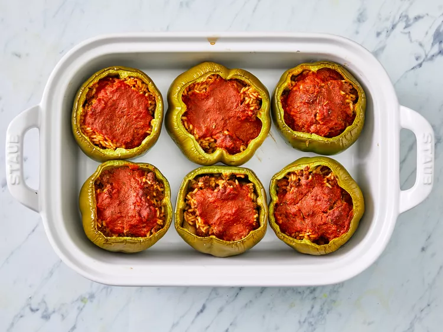

Stuffed Peppers
If you're looking for a filling meal that will satisfy everyone at your table, you've come to the right place. The Allrecipes community loves this top-rated stuffed pepper recipe — reviewers say it's "delicious," "easy," and "full of flavor."
Ingredients
- 1 cup cold water
- ½ cup uncooked long grain white rice
- 1 tablespoon vegetable oil
- 1 pound ground beef
- 6 medium green bell peppers
- 16 ounces tomato sauce, divided
- 1 tablespoon Worcestershire sauce
- ¼ teaspoon garlic powder
- ¼ teaspoon onion powder
- salt and ground black pepper to taste
- 1 teaspoon Italian seasoning
Steps
- Gather all ingredients, and preheat the oven to 350 degrees F (175 degrees C).
- Bring water and rice to a boil in a covered saucepan. Reduce heat to low and simmer until rice is tender, about 20 minutes.
- Meanwhile, heat oil in a skillet over medium heat. Add ground beef and cook until evenly browned and crumbly, 7 to 9 minutes.
- Hollow out bell peppers by removing and discarding the tops, seeds, and membranes. Slice the bottoms of the peppers if necessary to make sure they stand up straight.
- Arrange peppers in a baking dish with the hollowed sides facing upward.
- Prepare filling by mixing cooked beef, cooked rice, 1/2 of the tomato sauce, Worcestershire sauce, garlic powder, onion powder, salt, and pepper. Spoon an equal amount of filling into each hollowed pepper.
- Prepare filling by mixing cooked beef, cooked rice, 1/2 of the tomato sauce, Worcestershire sauce, garlic powder, onion powder, salt, and pepper. Spoon an equal amount of filling into each hollowed pepper.
- Prepare filling by mixing cooked beef, cooked rice, 1/2 of the tomato sauce, Worcestershire sauce, garlic powder, onion powder, salt, and pepper. Spoon an equal amount of filling into each hollowed pepper.
- Serve hot and enjoy!